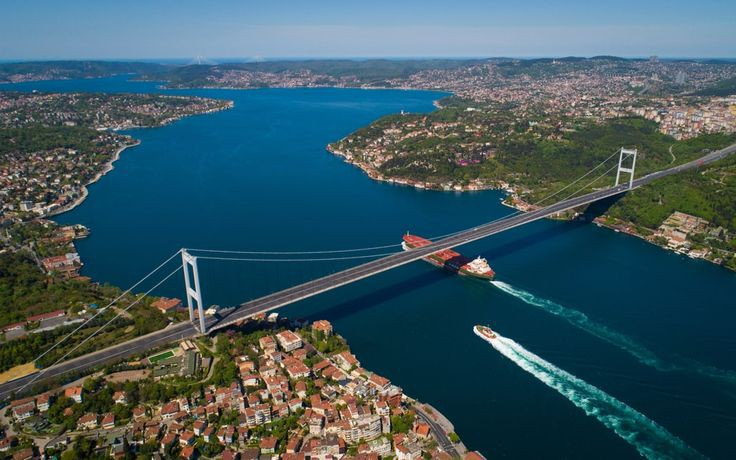
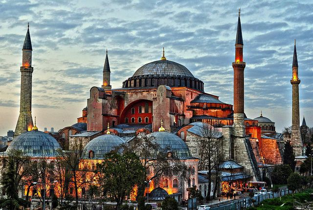
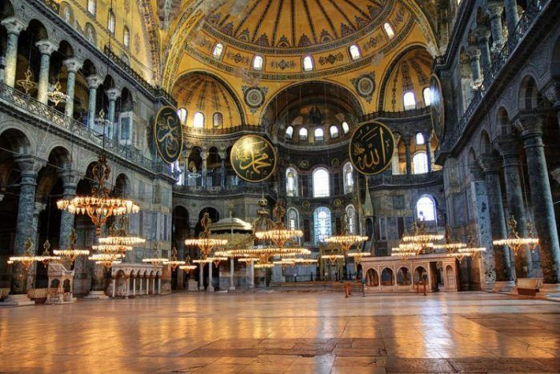
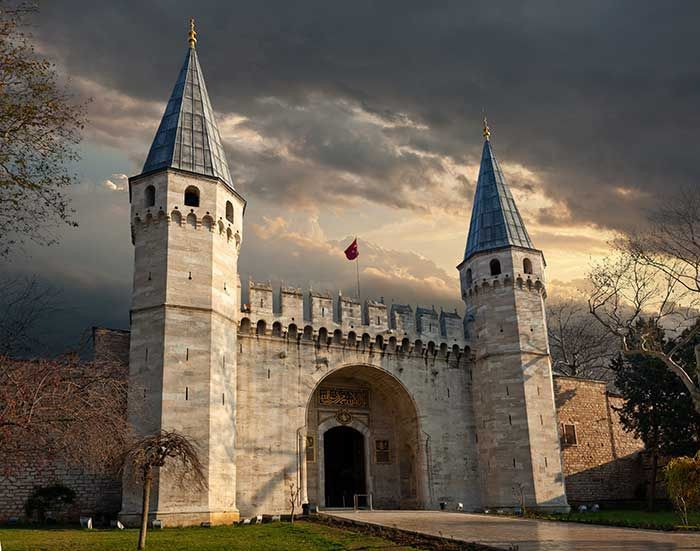
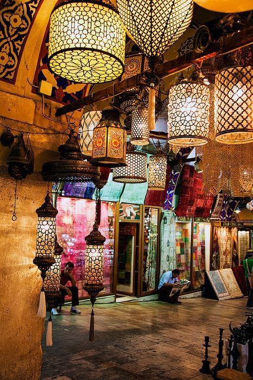
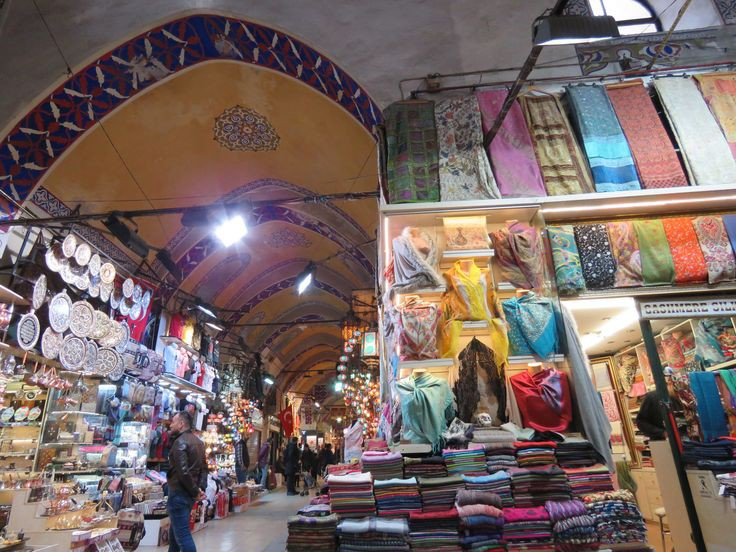
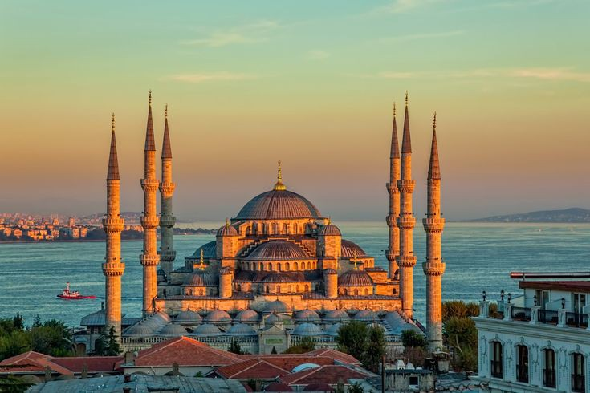
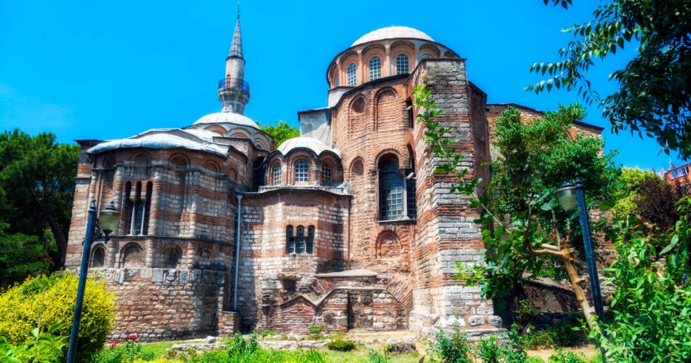
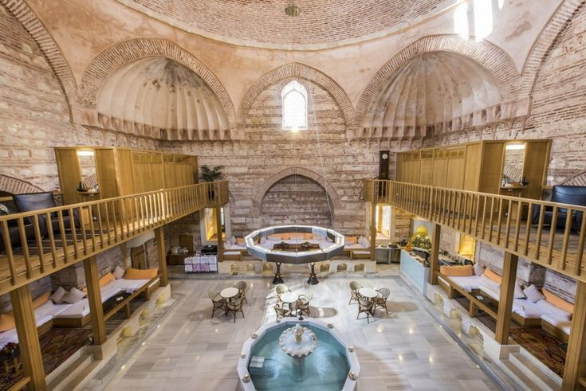
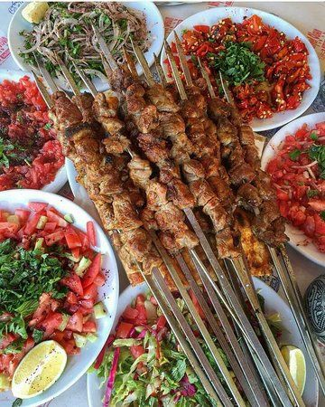

ISTANBUL
Visiter Istanbul est un moment unique. En effet, l’ex-capitale turque possède la particularité
d’être située sur deux continents à la fois. Un fait unique, qui lui vaut souvent d’être désignée comme
le lieu de rencontre entre l’Orient et l’Occident.
Une croisière sur le Bosphore
Une croisière sur le Bosphore offre non seulement un bel aperçu de la ville,
mais les rives à la fois européenne et asiatique
du célèbre chenal ont beaucoup à offrir : un grand nombre d’anciens palais et demeures s’y trouvent,

La Basilique Sainte-Sophie

Construite en tant qu’église au VIe siècle, elle devient ensuite une mosquée
lorsque les Ottomans prennent le contrôle de la ville, au XVe siècle.
c’est ce changement de religion qui lui a valu cette architecture absolument exceptionnelle.
En effet, comme en témoignent le dôme et les minarets, Sainte-Sophie mélange donc des éléments typiques
des églises chrétiennes et des mosquées.
Le Palais de Topkapi>
Ce palais (Topkapi Sarayi en turc) n’est nul autre que l’ancienne résidence
principale des sultans. Les lieux ont ainsi vu défiler les différents souverains de l’Empire
ottoman pendant près de 400 ans. Côte architecture, sous la dénomination de palais se cache en
réalité un complexe de pavillons.

Le Grand Bazar

Il est bien impossible de visiter la première métropole
turque sans faire un tour au Grand Bazar d’Istanbul. En plus d’être l’un des symboles de
la ville, c’est aussi le plus grand marché couvert du monde.
La Mosquée Bleue
Ses mosaïques de couleur bleu (d’où son surnom) attirent les touristes
du monde entier. L’imposante façade impressionne les visiteurs dès
leur arrivée.

Le musée Saint-Sauveur-in-Chora

Les murs et les plafonds de cette église sont ornés de magnifiques mosaïques
byzantines et de fresques fabuleuses. Certaines sont considérées comme les plus importantes du monde
chrétien.
Les hammams

il y a bien des choses à visiter à Istanbul ! cela peut vite devenir sportif
! Il faut donc penser à se reposer. Par heureux hasard, vous voici dans le pays du hammam !
Après une longue journée de visites, se détendre dans un bain turc arrive comme la cerise sur le gâteau.
La gastronomie

est des plats les plus repandus de Turquie
est le kebab("kebap" en turc) signifie grillade et désigne différents
plats à base de viande grillée. la viande est cuite sur une
brochette au feu de bois, pour ensuite être servie avec des tomates
et poivrons braisés.